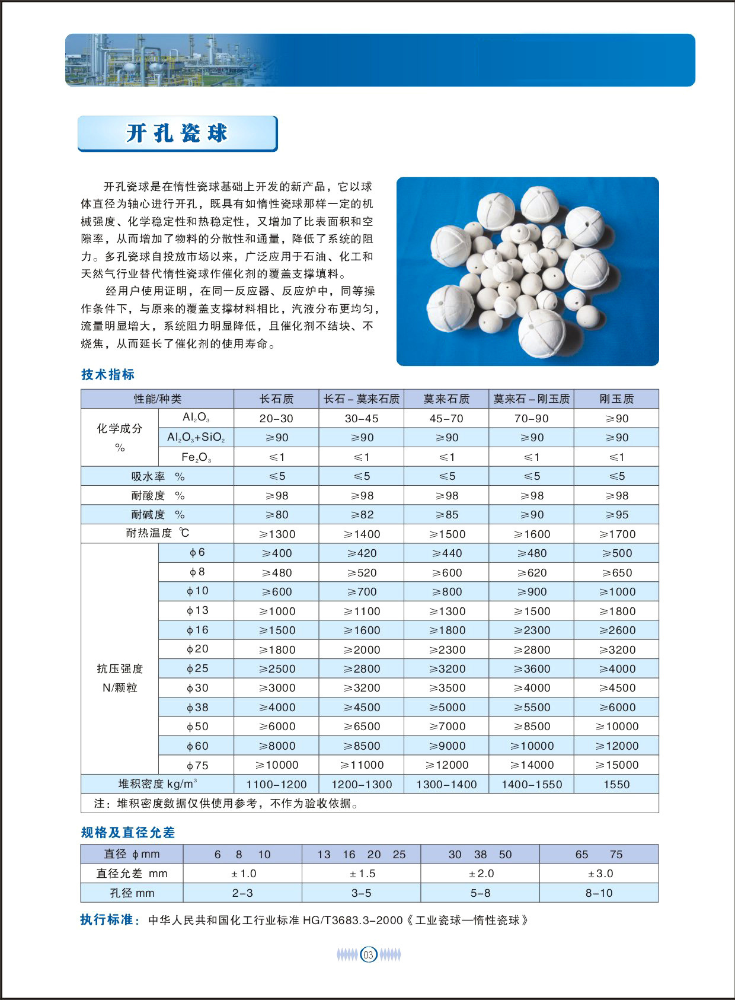
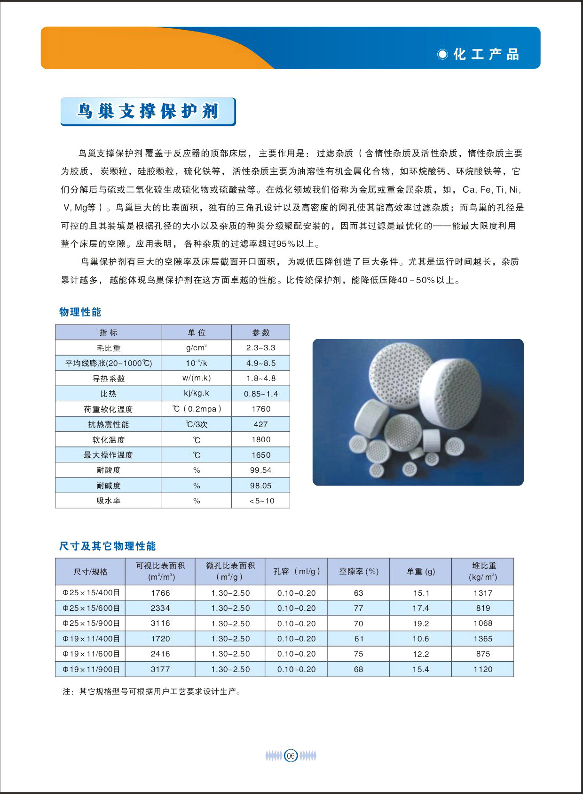
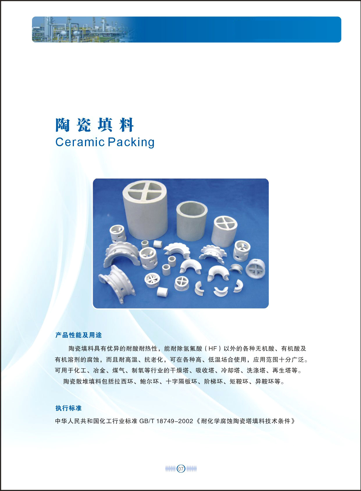
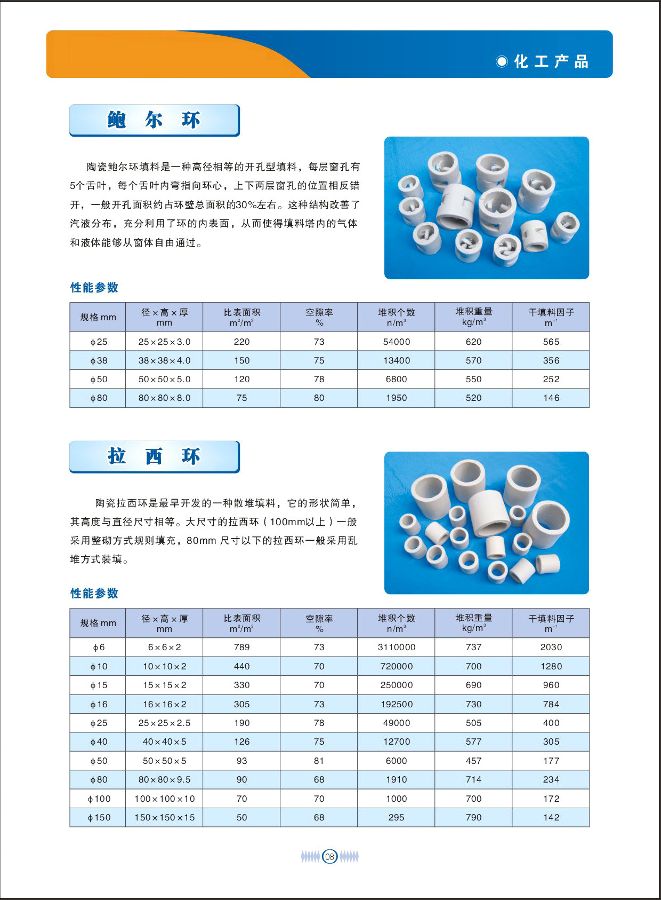
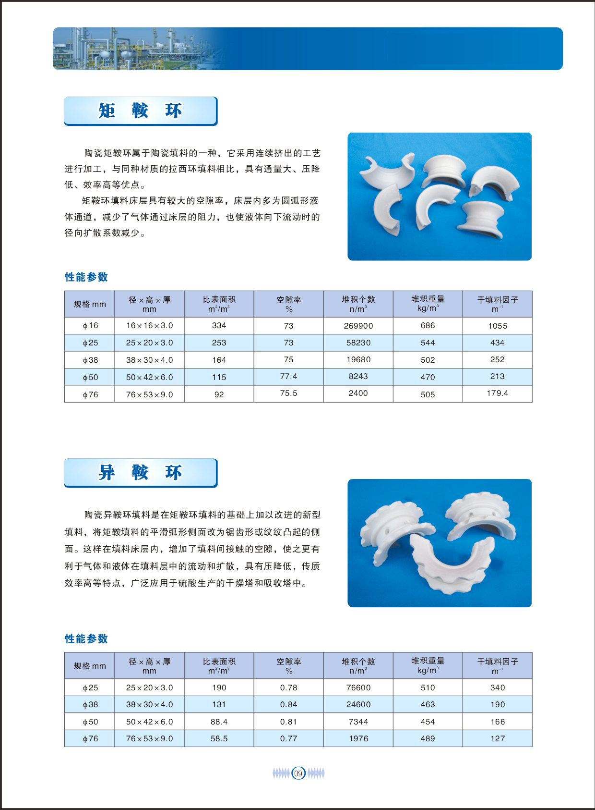
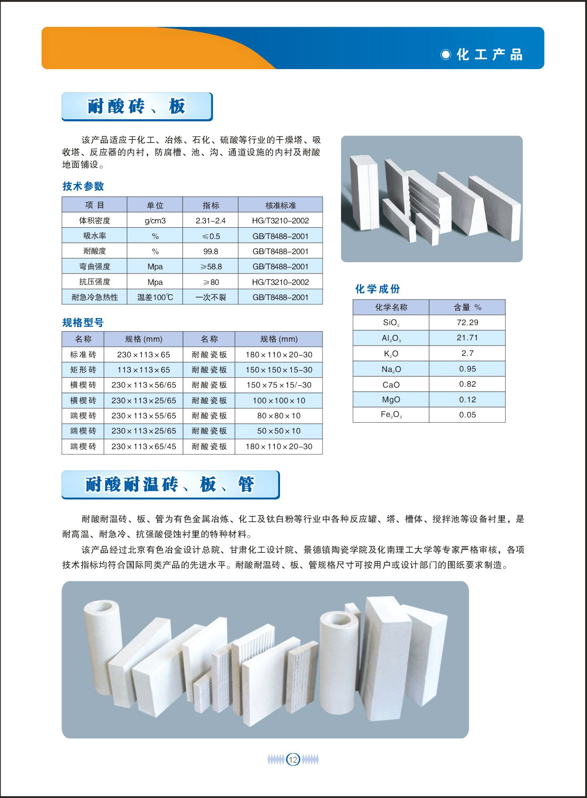
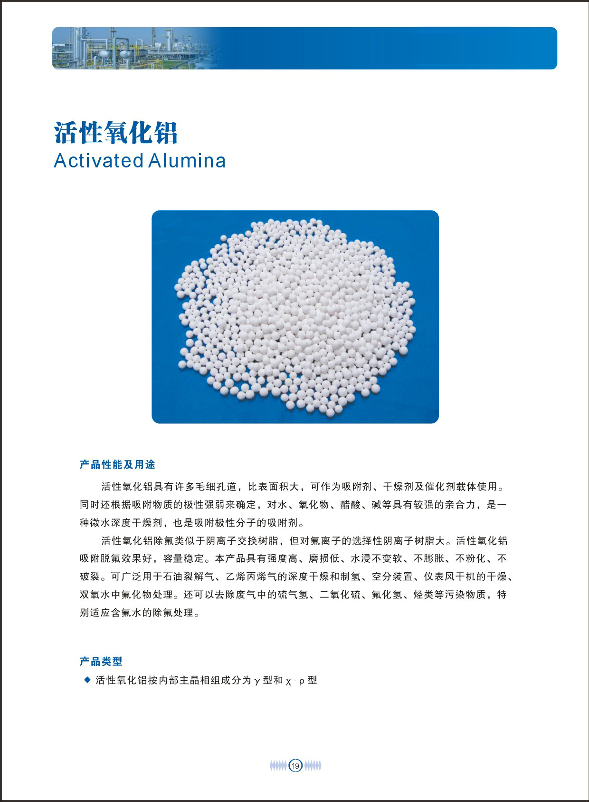
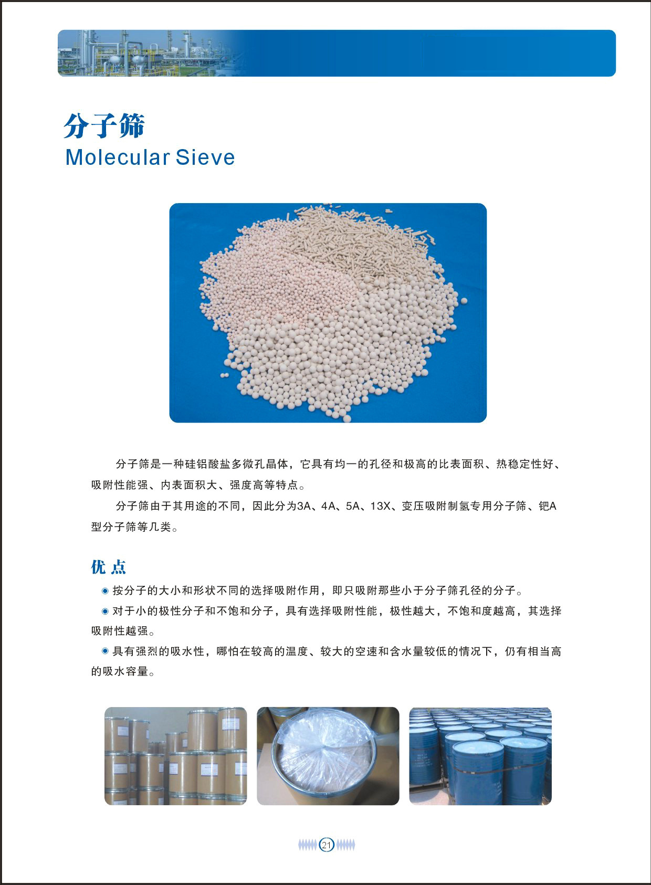

Ceramic Ball
Perforated Ceramic Ball
开孔瓷球
Perforated ceramic balls combine catalyst support strength with improved void ratio and flow distribution for packed beds.
View ProductProduct catalog
Browse ceramic packing, support media, adsorbents and corrosion-resistant ceramic products from the catalog.

Perforated ceramic balls combine catalyst support strength with improved void ratio and flow distribution for packed beds.
View Product
High alumina ceramic balls are used as grinding media and support media where high hardness, wear resistance and thermal stability are required.
View Product
Nest support protectors are ceramic support elements for large towers and catalyst beds, improving distribution and bed protection.
View Product
Ceramic random packing provides corrosion resistance for acid, alkali and high-temperature chemical separation applications.
View Product
Ceramic Pall Rings are random tower packing with windows and internal tongues, offering higher capacity and lower pressure drop than traditional Raschig rings.
View ProductCeramic Raschig Rings are classic random packing for corrosive environments and general-purpose mass transfer operations.
View Product
Ceramic saddle packing provides better void ratio and pressure drop performance than ring-type packing in many tower applications.
View ProductImproved saddle packing with enhanced contact surface and flow paths for high-efficiency chemical packing applications.
View Product
Ceramic cascade mini rings improve gas-liquid contact with a lower height-to-diameter ratio and lower pressure drop.
View ProductCeramic cross partition rings are strong packing elements with internal cross partitions for support, distribution and tower packing use.
View Product
Ceramic corrugated structured packing offers high separation efficiency and low pressure drop for corrosive and high-temperature applications.
View Product
Acid resistant ceramic bricks, plates and pipes are lining materials for corrosive industrial environments.
View Product
Honeycomb ceramic provides large geometric surface area, low pressure drop and stable thermal performance for heat exchange and catalytic support applications.
View Product
Activated alumina is a porous adsorbent with high surface area, used for drying, purification and fluoride removal applications.
View Product
Molecular sieves are crystalline aluminosilicate adsorbents with uniform pores for selective adsorption and drying.
View Product